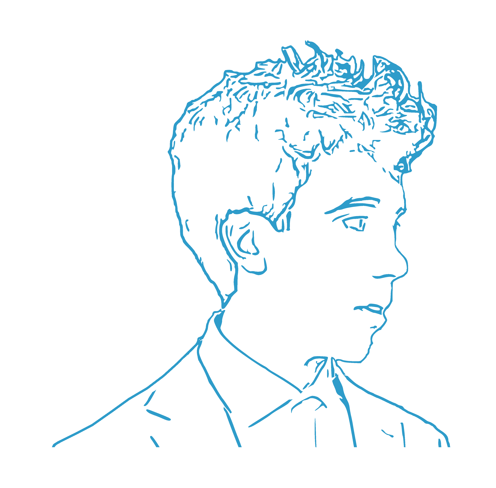

<!-- Add a hidden image tag for fetchpriority -->
<!-- 

<div id="sketch-container">
  <div style="background-image: url('../assets/pic/picture/pic_refined_colored.png');
              background-size: contain;
              background-position: center;
              background-repeat: no-repeat;
              width: 100%;
              height: 100vh;"
        id="sketch-holder">
  </div> 
</div> -->
<!--This is inside the sketch-container <div>
  <input id="nbCoefs" type="range" min="1" max="100" value="100" class="slider">
</div>
 -->


<div>
  
  <script id="morph-data" type="application/json">{{ site.data.morph | jsonify }}</script>
  <script defer src="/assets/js/morph.js?v={{ site.time | date: '%s' }}"></script>
</div>

<div id="home-text" class="blur">
  <h1 class="home-title">Hi, I'm <span class="text-primary">Francesco.</span></h1>
  <div class="home-content" id="presentation">
    {{ site.data.intro.summary | markdownify }}
  </div>
</div>


<!--{% include epicycles.html %}-->